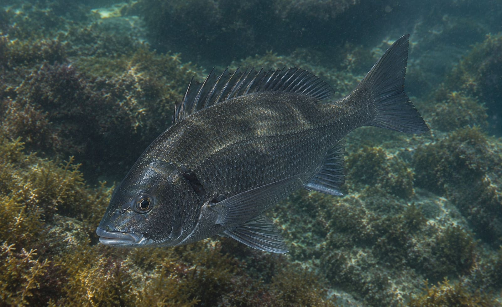
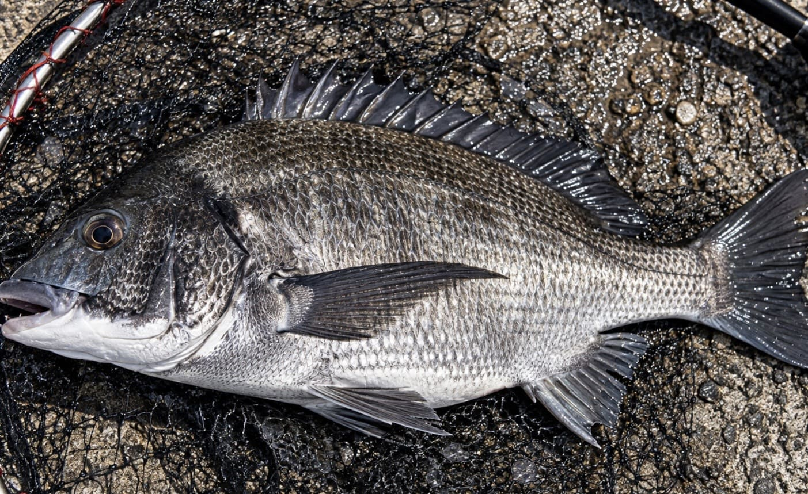

【堤防釣りの絶対的王道】「クロダイ（チヌ）」を陸から仕留める最強メソッド

釣り人なら誰もが一度は憧れる身近な大物、それがクロダイです。関西から西の地域では「チヌ」、九州では「チン」とも呼ばれ、関東地方ではチンチン、カイズ、クロダイと成長とともに呼び名が変わる出世魚としても広く知られています。驚くべきことに、現在70.8cmというクロダイの日本記録が釣り上げられたのは、絶海の孤島でも沖磯でもなく、私たちの身近にあるファミリー向けの防波堤でした。人間の生活圏に極めて近い浅場や汽水域、時には淡水域にまで侵入するほどのたくましさを持ちながら、いざ針に掛かれば釣り人を翻弄する強烈なファイトを見せる。今回は、そんな魅力あふれるクロダイを「陸（堤防・オカッパリ）」から仕留めるための知識と多彩なアプローチ方法を、通常の1.5倍の特大ボリュームで徹底解説します！
1. 雑食の極み！ クロダイの特異な生態と「四季」の動き
クロダイを攻略するうえでまず理解すべきは、その驚異的な「食性の幅広さ」と「季節ごとの明確な行動パターン」です。
■ なんでそんなモノまで？ 驚きの雑食性
クロダイは頑強なアゴと歯を持っており、オキアミやイソメ類といった定番のエサはもちろん、硬い殻を持つカニやイガイ（カラス貝）、フジツボ、さらには小魚や海藻まで、海の中にあるありとあらゆるものを捕食します。この悪食ぶりは凄まじく、なんとスイカの切り身（砂糖まぶし）やスイートコーン、カイコのサナギといった人間が持ち込んだものまで好んで口にするほどです。この食性の広さが、「同じクロダイなのに釣り場や季節によって釣り方が劇的に変わる」という奥深さを生み出しています。また、成長の過程でオスからメスへと性転換する雌雄同体の魚であることも、生命の神秘を感じさせる特徴です。
■ カレンダーで読み解くクロダイの動き
クロダイは一年中狙える魚ですが、季節によって居場所が大きく変わります。
- 春（乗っ込み）： 3〜5月にかけて、産卵を控えた大型のクロダイが体力をつけるために深場から浅場（藻が密生した波静かな湾内の漁港や小磯など）へと大挙して押し寄せてきます。これを「乗っ込み」と呼び、初心者でも大型を狙いやすい年間最大のチャンスとなります。
- 夏： 水温の上昇とともに、非常に水深の浅いハードボトムや護岸にまで姿を見せるようになります。海面に浮かんだスイカなどに派手に飛びつくのもこの時期で、トップウォーター（水面）のルアーゲームも白熱します。
- 秋（荒食い）： 9〜11月は、越冬に向けて再び群れを作り、エサを荒食いする数釣りの大チャンスです。
- 冬（落ち・居着き）： 水温が下がると徐々に深場へと移動（落ち）して越冬しますが、中にはそのまま湾内の防波堤などに留まる大型個体もいます。これらは「居着き」と呼ばれ、体色が黒っぽく、警戒心が非常に高いため釣り人にとって手強いターゲットになります。
2. 陸っぱりのセオリー！「硬い場所」と「底」を狙い撃て
防波堤や護岸からクロダイを狙う場合、どこに仕掛けを投入するかが勝敗を分けます。クロダイは変化のない砂浜のど真ん中を回遊するような魚ではありません。
■ キーワードは「硬い場所」
クロダイの主食となるカニやエビ、イガイなどの貝類は、硬い障害物に付着・生息しています。そのため、堤防の壁際スレスレ、岸壁の継ぎ目、テトラポッドの際や穴の中、カキ殻がびっしり付いた護岸、捨て石の周りなどが超一級ポイントになります。身を隠すことができ、かつエサが豊富な「海底の変化」を探し出すことが釣果への近道です。
■ 防波堤のクロダイは「底」にいる
磯釣りではコマセ（マキエ）に浮いてくることもあるクロダイですが、防波堤の周辺は海底が砂地であることが多く、基本的には底付近から離れようとしません。そのため、防波堤からの釣りでは「底（ボトム）」をいかに正確にトレースし、エサを届けるかが最重要課題となります。水深を正確に測り、海底付近に狙いを絞るのがセオリーです。

3. エサ釣り編① 堤防釣りの王道「ウキフカセ釣り」
クロダイのエサ釣りの中で最も守備範囲が広く、基本となるのがウキフカセ釣りです。
■ 魚を「ポイントに呼ぶ」戦略
フカセ釣りの本質は、オキアミや集魚材をブレンドしたマキエを撒き、クロダイが安心してエサを食べる「食卓（ポイント）」を海中に作り出すことにあります。潮の流れる方向や速さを計算し、海底のわずかな変化がある場所にマキエを効かせ、そこに自分の刺しエサを自然に同調させて流し込むのが極意です。マキエはあるのに付けエサがそこに無い、という不自然な状態を避ける技術が求められます。
■ ウキの使い分けとタナ探し
仕掛けには主に、遠投や潮乗りに優れる「円錐ウキ」と、遠くからでもアタリが見やすく底付近のシビアな変化を捉えやすい「棒ウキ」が使われます。海底の起伏が激しい場所なら円錐ウキ、湾内の波静かな防波堤で底をネチネチ攻めるなら棒ウキが有利です。基本のタナは底付近ですが、潮が動いたりマキエが効いて活性が上がると中層まで浮くこともあるため、反応がなければ少しずつタナを上げて探り直す柔軟さも必要です。
4. エサ釣り編② 足元に潜む大物を直撃！「落とし込み釣り（ヘチ釣り）」
防波堤の壁に張り付いたイガイやフジツボ、その隙間に潜むカニを狙って、堤防際ギリギリを回遊するクロダイを狙い撃つのが「落とし込み釣り（ヘチ釣り）」です。
■ 歩いて魚を探す、ハンティングゲーム
マキエで魚を寄せるフカセ釣りとは対照的に、落とし込み釣りは「クロダイが付いている壁を自ら歩いて探す」機動力の釣りです。2.4〜2.7mほどの短い専用竿とタイコリールを使い、ガン玉を打っただけの超シンプルな仕掛けで、堤防の壁際スレスレにカニやイガイを自然に滑り落としていきます。クロダイの目線からは「壁からポロリと貝やカニが剥がれ落ちてきた」ように見せるのがコツです。少し沖のテトラ帯や障害物周辺まで探る場合は「前打ち」と呼ばれます。
■ 糸の変化でアタリを読む
アタリは手元に「ゴン！」と来ることは少なく、スルスルと落ちていくはずの糸が途中でフワッと止まったり、横にスライドしたりといった「違和感」として現れます。この微細な変化を捉えて鋭くアワセを入れる瞬間はたまりません。クロダイは非常に警戒心が強いため、防波堤の上をドスドス歩いたり、海面に人影を落としたりするのは厳禁です。足音を殺し、気配を消して挑む忍者のようなアプローチが求められます。
5. エサ釣り編③ エサ取りを完全突破！「ダンゴ釣り（紀州釣り）」
エサ取りの小魚が多い時期や、潮流が速くてフカセ釣りでは底にエサを留めておけない状況で絶大な威力を発揮するのが「ダンゴ釣り（紀州釣り）」です。
■ エサをバリアで包んで海底へ直送
この釣りでは、オキアミやサナギ、練りエサなどの刺しエサを、配合エサとアミコマセを練り上げた野球ボール大の「ダンゴ」で包み込み、そのまま海へ投入します。ダンゴがオモリとマキエの役割を兼ねて一気に海底まで沈むため、表層のエサ取りの猛攻を完全にシャットアウトできます。海底に着底したダンゴをつつこうとクロダイが寄り付き、ダンゴが割れた瞬間に中からフワリと美味しそうな刺しエサが飛び出して食わせる、という非常に理にかなったシステムです。
■ ダンゴの配合が勝敗を分ける
ダンゴ釣りは、底が平らな砂地帯で行うのが基本です（岩礁帯だと根掛かりするため）。エサを海底すれすれに浮かせる「浮かせ釣り」と、海底に這わせる「ハワセ釣り」の2つのアプローチがあります。空中で割れてしまったり、逆に海底でいつまでも割れなかったりしないよう、ダンゴの水分量や握る回数（硬さ）を状況に合わせてコントロールする職人技が光る釣りです。
また、地域によっては夏から秋にかけて、スイカの切り身やサナギだけを撒いて海面までクロダイを浮上させて釣る「ハネ釣り（ポカン釣り）」といった豪快で特殊なフカセ釣法も存在します。
6. ルアー編 新時代のゲームフィッシング「ボトムチニング」
近年、ルアーマンの間で爆発的な人気を集めているのが、クロダイをルアーで狙う「チニング」です。エサ釣りが「魚を呼ぶ」のに対し、ルアーは「クロダイがいる場所へ自ら撃ち込む」攻めの釣りとなります。
■ フリーリグで海底の地形を舐め尽くす
現在のチニングの中心は、底（ボトム）を攻略するゲームです。河口や干潟、水深わずか30cm程度の浅いハードボトム（石積みやゴロタ）が主戦場となります。最も代表的な仕掛けが、ラインにシンカー（オモリ）を通し、その先にクロー（カニ）系やホッグ（エビ）系のワームを付けた「フリーリグ」です。
キャストして着底させたら、シンカーでゴツゴツと底を叩きながらワームをズル引きしたり、時折止めて食わせの間を与えたりして、底を這う甲殻類を演出します。底質が砂泥なのか、カキ殻なのか、石なのかをシンカー越しに感じ取りながら探る、非常にゲーム性の高い釣りです。
■ 合わせのタイミングとトップウォーターの熱狂
チニングのアタリは「コツコツ」「モゾモゾ」といった前触れが多く、ここで即アワセしてしまうとすっぽ抜けます。クロダイがルアーに違和感を感じながらも追い食いしてくるのを待ち、ロッドにしっかりとした重みが乗ってから大きくフッキングするのがコツです。
また、夏場の高水温期や浅場では、ポッパーやペンシルベイトを使った「チヌトップ（トップウォーター）」が成立します。水面を割って「バシャッ！」とルアーに襲い掛かる大迫力のバイトシーンは、ボトムゲームとは全く違う視覚的な興奮を味わえます。
7. 実戦！ 釣り場で最初に見るべき「5つの条件」
クロダイはただ闇雲に仕掛けを投げても釣れません。釣り場に到着したら、まずは以下の5つの項目を観察して攻略プランを組み立てましょう。
- 潮と潮位： 潮がどちらに流れているか。干潮から上げ潮に変わるタイミングで、クロダイはエサを求めて浅場（シャロー）へ差してきます。
- 水深と底質： 砂地か、岩やカキ殻があるか。底に変化がある場所を重点的に狙います。
- ベイト（エサ）： その場所にカニ、貝、小魚など、クロダイが食べていそうなエサが存在するか。
- 濁り： 警戒心の強いクロダイにとって、雨後や波立ちによる「適度な濁り」は最強の味方になります（濁りすぎはNG）。
- 障害物（壁）： 足元の壁にイガイがびっしり付いていれば、まずは迷わず「落とし込み」からスタートです。
潮が効いていればフカセで寄せ、壁にエサが付いていれば落とし込みで歩き、底に変化があれば紀州釣りやチニングのフリーリグで攻略し、夏場の浅場ならトップウォーターで水面を炸裂させる。
クロダイという魚は「釣り方が多い」のではなく、「生息環境と食性が信じられないほど幅広いからこそ、多様な釣り方が成立する」のです。まずは自分のスタイルに合った釣り方を一つ極め、そこから季節や状況に合わせてアプローチの幅を広げていけば、堤防の王様「クロダイ」は必ずあなたのタモ網に収まるはずです！
📍 関東の生息・釣果スポット
※マップ上の赤いドットが釣れるポイントです。